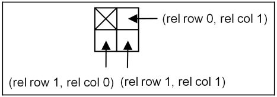
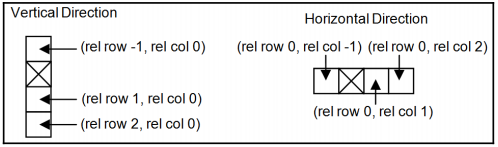
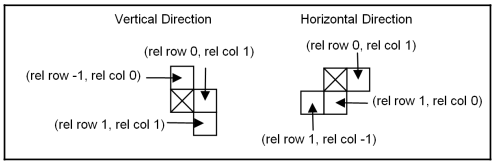
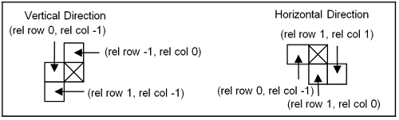
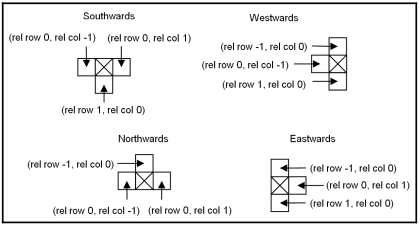
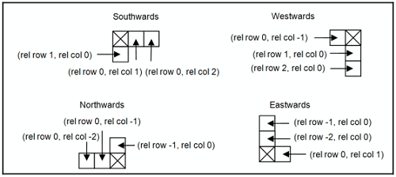
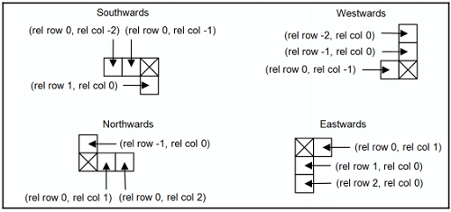

ГЛАВА 3
Создание приложения "Тетрис"
В этой главе мы разрабатываем классический тетрис. Мы смотрим дальше в класс Window, включая написание текста и рисование более сложных фигур. Мы также смотрим на сроки, случайные числа и графические обновления, такие как падающие фигуры и эффекты вспышки. Иллюстрация показана ниже:

Функция MainWindow
Функция MainWindow аналогична методам из главы 2, Hello, Small World !. Он устанавливает имя приложения и возвращает указатель на главное окно, которое в данном случае является экземпляр класса TetrisWindow. Как сказано в главе 2 «Привет, маленький мир!» то имя приложения используется при доступе к реестру, при открытии или сохранении файла, а также пункт меню «О программе». Однако ни одна из этих функций не используется в этом приложении:
MainWindow.cpp
#include "..\\SmallWindows\\SmallWindows.h"
#include "GameGrid.h"
#include "TetrisFigure.h"
#include "RedFigure.h"
#include "BrownFigure.h"
#include "TurquoiseFigure.h"
#include "GreenFigure.h"
#include "YellowFigure.h"
#include "BlueFigure.h"
#include "PurpleFigure.h"
#include "TetrisWindow.h"
void MainWindow(vector <String> /* argumentList */, WindowShow windowShow) {
Application::ApplicationName() = TEXT("Tetris");
Application::MainWindowPtr() = new TetrisWindow(windowShow);
}
Окно тетриса
В этом приложении мы не используем структуру StandardDocument из Главы 2, Привет, маленький мир !. Вместо этого класс TetrisWindow расширяет корневой класс Small Windows. Окно прямо. Причина в том, что нам не нужна функциональность Платформа StandardDocument или ее базовый класс Document. Мы не используем меню или ускорители, и мы не сохраняем и не загружаем файлы:
TetrisWindow.h
class TetrisWindow : public Window {
public:
TetrisWindow(WindowShow windowShow);
~TetrisWindow();
В этом приложении мы игнорируем мышь. Вместо этого мы рассмотрим работу с клавиатурой. В Метод OnKeyDown вызывается, когда пользователь нажимает или отпускает клавишу:
bool OnKeyDown(WORD key, bool shiftPressed, bool controlPressed);
Подобно круглому приложению, метод OnDraw вызывается каждый раз, когда клиент окна область нужно перерисовать:
void OnDraw(Graphics& graphics, DrawMode drawMode) const;
Методы OnGainFocus и OnLoseFocus вызываются, когда окно получает или теряет фокус ввода соответственно. Когда окно теряет фокус ввода, оно не получает никаких ввод с клавиатуры и таймер отключается, предотвращая перемещение падающей фигуры:
void OnGainFocus();
void OnLoseFocus();
Метод OnTimer вызывается каждую секунду, когда окно находится в фокусе. Он пытается переместить падающая фигура на один шаг вниз. Он вызывает метод NewFigure, если не удается переместить фигура вниз. Метод NewFigure пытается представить новую фигуру в игре доска. Если это не удается, вызывается метод GameOver, который спрашивает пользователя, хочет ли он новый игра. Метод NewGame вызывается, если пользователь хочет новую игру. Если пользователь не хотите новую игру, выходит из приложения:
void OnTimer(int timerId);
void EndOfFigure();
void GameOver();
void NewGame();
DeleteFullRows проверяет каждую строку, вызывая метод IsRowFull, и вызывает Методы FlashRow и DeleteRow для каждой полной строки:
void DeleteFullRows();
bool IsRowFull(int row);
void FlashRow(int row);
void DeleteRow(int markedRow);
Метод TryClose вызывается, если пользователь пытается закрыть окно, щелкнув значок крестик в правом верхнем углу окна. Он отображает окно сообщения, которое спрашивает пользователя, если они действительно хотят бросить курить:
bool TryClose();
Поле gameGrid содержит сетку, на которой отображаются фигуры (см. Следующий раздел). Падающая фигура (падающая фигура) падает на сетку, а следующая фигура падает down (nextFigure) отображается в правом верхнем углу. Каждый раз, когда игрок заполняет строку, оценка (currScore) увеличивается. Идентификатор таймера (TimerId) необходим для отслеживания таймер и получает произвольное значение 1000. Наконец, список фигур (figureList) будет быть заполненным семью фигурами, по одной каждого цвета. Каждый раз, когда требуется новая фигура, случайным образом выбранная фигура из списка будет выбрана и скопирована:
private:
GameGrid gameGrid;
TetrisFigure fallingFigure, nextFigure;
int currScore = 0;
bool timerActive = true, inverse = false;
static const int TimerId = 1000;
vector<TetrisFigure> figureList;
};
Параметр PreviewCoordinate в вызове конструктора Window указывает, что размер окна фиксированный, а второй параметр указывает, что размер составляет 100 * 100 единиц. Это означает, что, в отличие от приложения круга, размер фигур и игровых полей будет изменить, когда пользователь изменяет размер окна:
TetrisWindow.cpp
#include "..\\SmallWindows\\SmallWindows.h"
#include "GameGrid.h"
#include "TetrisFigure.h"
#include "RedFigure.h"
#include "BrownFigure.h"
#include "TurquoiseFigure.h"
#include "GreenFigure.h"
#include "YellowFigure.h"
#include "BlueFigure.h"
#include "PurpleFigure.h"
#include "TetrisWindow.h"
TetrisWindow::TetrisWindow(WindowShow windowShow)
:Window(PreviewCoordinate, Rect(0, 0, 100, 100),
nullptr, OverlappedWindow, NoStyle, Normal),
Верхние 20 процентов клиентской области зарезервированы для оценки и следующей цифры. А игровая сетка покрывает нижние 80 процентов клиентской области (от 20 до 100 единиц высоты):
gameGrid(Rect(0, 20, 100, 100)) {
Поскольку мы расширяем класс Window, нам нужно установить заголовок окна вручную:
SetHeader(TEXT("Tetris"));
Интервал таймера установлен на 1000 миллисекунд, что означает, что будет вызываться OnTimer. каждую секунду. Генератор случайных чисел инициализируется вызовом стандартных функций языка Си. srand и время:
SetTimer(TimerId, 1000);
srand((unsigned int) time(nullptr));
Список фигур инициализируется одной фигурой каждого цвета; падающая и следующая фигура случайно выбранный из этого списка. Одна из фигур в списке будет копироваться каждый раз, когда мы нужна новая фигура:
figureList.push_back(RedFigure(this, &gameGrid));
figureList.push_back(BrownFigure(this, &gameGrid));
figureList.push_back(TurquoiseFigure(this, &gameGrid));
figureList.push_back(GreenFigure(this, &gameGrid));
figureList.push_back(YellowFigure(this, &gameGrid));
figureList.push_back(BlueFigure(this, &gameGrid));
figureList.push_back(PurpleFigure(this, &gameGrid));
fallingFigure = figureList[rand() % figureList.size()];
nextFigure = figureList[rand() % figureList.size()];
}
Строго говоря, не обязательно сбрасывать таймер при закрытии окна Тетриса. В деструктор включен только для полноты:
TetrisWindow::~TetrisWindow() {
DropTimer(TimerId);
}
Ввод с клавиатуры
Метод OnKeyDown переопределяет метод в классе Window и вызывается каждый раз. пользователь нажимает клавишу. Падающую фигуру стараемся перемещать в соответствии с нажатой клавишей. Нам все равно, нажал ли пользователь клавишу Shift или Ctrl:
bool TetrisWindow::OnKeyDown(WORD key, bool /* shiftPressed */,
bool /* controlPressed */) {
switch (key) {
case KeyLeft:
fallingFigure.TryMoveLeft();
break;
case KeyRight:
fallingFigure.TryMoveRight();
break;
case KeyUp:
fallingFigure.TryRotateAnticlockwise();
break;
case KeyDown:
fallingFigure.TryRotateAnticlockwise();
break;
Когда пользователь нажимает клавишу пробела, падающая фигура падает с видимой скоростью, создавая иллюзия падения. Мы пытаемся перемещать падающую фигуру на один шаг вниз каждые 10 миллисекунд на вызов функции Win32 API Sleep. Метод TryMoveDown возвращает false, если он больше невозможно переместить фигуру вниз:
case KeySpace:
while (fallingFigure.TryMoveDown()) {
::Sleep(10);
}
break;
}
return true;
}
Рисование
Метод OnDraw начинается с рисования игровой сетки и двух линий, разделяющих клиентскую область. на три части. В верхнем левом углу отображается текущий счет, в правом верхнем углу отображается следующий рисунок, а в нижней части отображается фактическая игровая сетка:
void TetrisWindow::OnDraw(Graphics& graphics,
DrawMode /* drawMode */) const {
gameGrid.DrawGameGrid(graphics, inverse);
graphics.FillRectangle(Rect(Point(0, 0), Point(100,20)), White, White);
graphics.DrawLine(Point(40, 0), Point(40, 20), Black);
graphics.DrawLine(Point(0, 20), Point(100, 20), Black);
Обратите внимание, что мы добавляем смещение при рисовании следующей фигуры, чтобы выйти из игры. сетку в верхний правый угол. Значение 25 перемещает фигуру из середины сетки в середину его правой половины, а значение -18 перемещается из сетки вверх в область, предшествующую сетки:
fallingFigure.DrawFigure(graphics);
nextFigure.DrawFigure(graphics, Size(25, -18));
Шрифт партитуры установлен на Times New Roman, размер 10. Здесь размер не относится к типографские точки, но до логических единиц. Поскольку в вызове конструктора Window указано, что мы дал систему координат PreviewCoordinate и размер 100 * 100, высоту text будет 10 единиц, что составляет десятую часть высоты текстовой клиентской области. Это тоже половина высоты части клиентской области, где написана оценка:
Font scoreFont(TEXT("Times New Roman"), 10);
Последний параметр false в вызове метода DrawText указывает, что размер текст не будет пересчитан. В следующих главах мы будем отображать текст, сохраняющий тот же размер, независимо от размера окна и разрешения экрана. Однако в этой главе размер текста будет изменен, когда пользователь изменит размер окна:
graphics.DrawText(Rect(0, 0, 40, 20), to_String(currScore),
scoreFont, Black, White, false);
}
Фокус ввода
Методы OnGainFocus и OnLoseFocus запускают и останавливают таймер соответственно, чтобы падающая фигура не падает, когда окно не в фокусе:
void TetrisWindow::OnGainFocus() {
SetTimer(TimerId, 1000);
}
void TetrisWindow::OnLoseFocus() {
DropTimer(TimerId);
}
Таймер
Таймер активен, когда он находится в фокусе ввода. Когда он активен, метод TryMoveDown будет вызываться каждый раз при вызове метода OnTimer (раз в секунду). Когда фигура больше не может упасть (метод TryMoveDown возвращает false), EndOfFigure метод называется:
void TetrisWindow::OnTimer(int /* timerId */) {
if (timerActive) {
if (!fallingFigure.TryMoveDown()) {
EndOfFigure();
}
}
}
Новые фигуры
Когда падающая фигура не может двигаться вниз, метод OnTimer вызывает метод NewFigure. Во-первых, нам нужно сохранить падающую фигуру в игровой сетке, вызвав метод AddToGrid. Затем мы позволяем следующей фигуре стать новой падающей фигурой, и мы случайным образом выбрать новую следующую фигуру из списка фигур. Мы аннулируем площадь новая падающая фигура и область правого верхнего угла, где нарисована следующая фигура:
void TetrisWindow::NewFigure() {
fallingFigure.AddToGrid();
fallingFigure = nextFigure;
fallingFigure.InvalidateFigure();
nextFigure = figureList[rand() % figureList.size()];
Rect nextArea(40, 0, 100, 20);
Invalidate(nextArea);
UpdateWindow();
Удаляем возможные полные строки и обновляем окно:
DeleteFullRows();
UpdateWindow();
Если новая падающая фигура не действительна с самого начала, игра окончена и GameOver называется:
if (!fallingFigure.IsFigureValid()) {
GameOver();
}
}
Игра окончена
Метод GameOver представляет счет и позволяет пользователю решить, хочет ли он новый игра. Если они хотят новую игру, она инициализируется вызовом NewGame. Если пользователь не хотите новую игру, вызов функции Win32 API PostQuitMessage завершает оформление заявки.
Обратите внимание, что мы вызываем другую версию метода Invalidate без параметров. Это делает недействительной всю клиентскую область:
void TetrisWindow::GameOver() {
Invalidate();
UpdateWindow();
Таймер неактивен, пока отображается сообщение:
timerActive = false;
String message = TEXT("Game Over.\nYou scored ") +
to_String(currScore) +
TEXT(" points.\nAnother game?");
if (MessageBox(message, TEXT("Tetris"), YesNo, Question)==Yes) {
NewGame();
}
else {
::PostQuitMessage(0);
}
}
Новая игра
Метод NewGame инициализирует случайно выбранные новые падающие и следующие фигуры, сбрасывает счет и очищает игровую сетку перед активацией таймера, а также делает недействительными и обновляет окно, в результате чего новая падающая фигура начинает падать, а новая игра начать:
void TetrisWindow::NewGame() {
fallingFigure = figureList[rand() % figureList.size()];
nextFigure = figureList[rand() % figureList.size()];
currScore = 0;
gameGrid.ClearGameGrid();
timerActive = true;
Invalidate();
UpdateWindow();
}
Удаление и мигание строк
При удалении полных строк мы перебираем строки, мигая и удаляя каждую полную строку. Увеличиваем оценку и обновляем площадь строки. Обратите внимание, что строки начинаются сверху сетки. Это означает, что мы должны пройти цикл от самой высокой строки к самой низкой строке, чтобы удалите строку в правильном порядке.
Обратите внимание: если строка мигает и удаляется, мы не обновляем переменную строки, так как удаленная строка будет заменена на строку выше, которую также необходимо изучить:
void TetrisWindow::DeleteFullRows() {
int row = Rows - 1;
while (row >= 0) {
if (IsRowFull(row)) {
FlashRow(row);
DeleteRow(row);
++currScore;
Rect scoreArea(0, 0, 40, 20);
Invalidate(scoreArea);
UpdateWindow();
}
else {
--row;
}
}
}
Строка считается полной, если в ней нет белого квадрата:
bool TetrisWindow::IsRowFull(int row) {
for (int col = 0; col < Cols; ++col) {
if (gameGrid[row][col] == White) {
return false;
}
}
return true;
}
Эффект вспышки выполняется путем перерисовки строки в нормальном и инвертированном цвете ( установлен обратный метод) трижды с интервалом 50 миллисекунд. При этом он особенно важно, чтобы мы аннулировали только область выбранной строки. В противном случае вся клиентская область окна будет мигать:
void TetrisWindow::FlashRow(int row) {
Rect gridArea = gameGrid.GridArea();
int colWidth = gridArea.Width() / Cols, rowHeight = gridArea.Height() / Rows;
Rect rowArea(0, row * rowHeight, Cols * colWidth, (row + 1) * rowHeight);
for (int count = 0; count < 3; ++count) {
inverse = true;
Invalidate(rowArea + gridArea.Top()Left());
UpdateWindow();
::Sleep(50);
inverse = false;
Invalidate(rowArea + gridArea.Top()Left());
UpdateWindow();
::Sleep(50);
}
}
При удалении строки мы ее не удаляем. Вместо этого мы перемещаем каждую строку над удалите строку на один шаг вниз и заполните верхнюю строку белыми квадратами. Осложнение что мы считаем строки сверху. Это делает нижнюю строку на экране строкой с самый высокий индекс. Создается впечатление, что мы начинаем снизу и удаляем все полный ряд, пока не дойдем до вершины:
void TetrisWindow::DeleteRow(int markedRow) {
for (int row = markedRow; row > 0; --row) {
for (int col = 0; col < Cols; ++col) {
gameGrid[row][col] = gameGrid[row - 1][col];
}
}
for (int col = 0; col < Cols; ++col) {
gameGrid[0][col] = White;
}
Invalidate(gameGrid.GridArea());
Invalidate(g);
UpdateWindow();
}
Закрытие окна
Наконец, когда пользователь хочет закрыть окно, щелкнув крестик в правом верхнем углу углу, нам нужно подтвердить, что они действительно хотят бросить курить. Если метод TryClose возвращает правда, окно закрыто:
bool TetrisWindow::TryClose() {
timerActive = false;
if (MessageBox(TEXT("Quit?"), TEXT("Tetris"), YesNo, Question) == Yes) {
return true;
}
timerActive = true;
return false;
}
Класс TetrisFigure
В этом приложении есть класс корневых фигур и один подкласс для каждого типа падения. фигура. Все фигурки можно двигать боком или поворачивать в ответ на запросы пользователя. Они также перемещаются вниз по таймеру.
Есть семь цифр, по одной для каждого цвета: красный, коричневый, бирюзовый, зеленый, желтый, синий и фиолетовый. Каждый из них также имеет уникальную форму. Однако все они содержат четыре квадрата. Они далее можно разделить на три группы в зависимости от их способности вращаться. Красная цифра - это самый простой. Это квадрат и он вообще не вращается. Коричневая, бирюзовая и зеленая фигура можно вращать в вертикальном и горизонтальном направлениях, а желтый, синий и фиолетовый фигуры можно вращать в северном, восточном, южном и западном направлениях. Для красной фигуры это не имеет особого значения, так как он не вращается.
Поля row и col класса TetrisFigure содержат центр фигуры, т.е. помечены крестиком на иллюстрациях этого раздела. Цветовое поле содержит цвет figure, а direction - текущее направление фигуры.
Наконец, массив направлений содержит относительные положения трех квадратов, окружающих отмеченный квадрат. Максимум четыре направления. В каждом направлении по три квадрата, которые представляют собой три оставшихся квадрата, которые не являются центром фигуры. Каждый квадрат содержит два целых числа: относительное положение центральной строки и столбца.
Конструктор по умолчанию необходим для инициализации FallFigure и nextFigure. методы в классе TetrisWindow. Второй конструктор защищен, поскольку он только вызывается его подклассами. У каждой фигуры есть свой подкласс TetrisFigure. Их конструкторы наведите указатель на цветовую сетку и определите ее цвет, начальную позицию и образцы рисунка:
TetrisFigure.h
class TetrisFigure {
public:
TetrisFigure();
protected:
TetrisFigure(Window* windowPtr, GameGrid* colorGridPtr,
Color color, int row, int col, Direction direction,
IntPair* northList, IntPair* eastList,
IntPair* southList, IntPair* westList);
public:
TetrisFigure& operator=(const TetrisFigure& figure);
TryMoveLeft, TryMoveRight, TryRotateClockwise, TryRotateClockwise, Все методы TryRotateAnticlockwise и TryMoveDown пытаются переместить фигуру. Они вызвать метод IsFigureValid, который проверяет, допустимо ли новое местоположение, то есть не находится за пределами игровой сетки или в уже занятой локации. IsFigureValid , в свою очередь, вызывает метод IsSquareValid для каждого из четырех квадратов:
void TryMoveLeft();
void TryMoveRight();
void TryRotateClockwise();
void TryRotateAnticlockwise();
bool TryMoveDown();
Существует две версии метода IsFigureValid, первая из которых вызывается метод TetrisWindow, а другая версия вызывается предыдущими методами try в чтобы проверить, действительно ли новое местоположение падающей фигуры:
bool IsFigureValid();
static bool IsFigureValid(int direction, int row, int col,
GameGrid* gameGridPtr, IntPair* figureInfo[]);
static bool IsSquareValid(int row, int col, GameGrid* gameGridPtr);
Метод AddToGrid добавляет четыре квадрата фигуры в игровую сетку:
void AddToGrid();
Метод InvalidateFigure аннулирует область, занимаемую фигурой, и Метод DrawFigure рисует фигуру:
void InvalidateFigure(Size offsetSize = ZeroSize);
void DrawFigure(Graphics& graphics, Size offsetSize = ZeroSize) const;
Поле gameGridPtr - это указатель на игровую сетку, к которой мы обращаемся, когда пытаемся переместить фигура, чтобы решить, действительно ли ее новое местоположение. Цветное поле - это цвет фигура (красный, коричневый, бирюзовый, зеленый, желтый, синий или фиолетовый). Строка, столбец и Поля направления содержат текущее местоположение и направление фигуры.
Поле figureInfo содержит форму фигуры. Фигура может вместить до четырех направления: север, восток, юг и запад. Помните, что строка и столбец содержат расположение цифры. В частности, они определяют расположение центрального квадрата из четырех квадратов. составляющие рисунок (отмечены крестиком на следующих рисунках). Остальные три квадраты определяются парами целых чисел, определяющими их положение относительно центрального квадрата.
Технически figureInfo представляет собой массив из четырех указателей (по одному для направлений север, восток, юг и запад). Каждый указатель указывает на массив из трех целочисленных пар, содержащих ячейки из трех квадратов относительно центрального квадрата:
protected:
Window* windowPtr;
GameGrid* gameGridPtr;
Color color;
int row, col;
Direction direction;
IntPair* figureInfo[4];
};
Конструктор по умолчанию необходим, потому что FallFigure и nextFigure являются членами объекты класса TetrisWindow. Однако их не нужно инициализировать, так как их значениям присваивается одна из семи цифр в массиве figureList:
TetrisFigure.cpp
#include "..\\SmallWindows\\SmallWindows.h"
#include "GameGrid.h"
#include "TetrisFigure.h"
#include "TetrisWindow.h"
TetrisFigure::TetrisFigure() {
// Empty
}
Второй конструктор вызывается конструктором подкласса цветного рисунка, чтобы инициализировать фигуру. Требуется указатель на главное окно и игровую сетку, цвет фигура, ее начальное местоположение и направление, а также списки ее местоположений на севере, востоке, юге и западные направления. Каждый из списков содержит три пары целых чисел, представляющих расположение квадраты относительно центрального квадрата:
TetrisFigure::TetrisFigure(Window*windowPtr, GameGrid*gameGridPtr,
Color color, int row, int col, Direction direction,
IntPair* northList, IntPair* eastList,
IntPair* southList, IntPair* westList)
:windowPtr(windowPtr),
gameGridPtr(gameGridPtr),
color(color),
row(row),
col(col),
direction(direction) {
figureInfo[North] = northList;
figureInfo[East] = eastList;
figureInfo[South] = southList;
figureInfo[West] = westList;
}
Оператор присваивания необходим, потому что падающие рисунки и nextFigure методы в классе TetrisWindow копируются из списка рисунков:
TetrisFigure& TetrisFigure::operator=(const TetrisFigure& figure) {
if (this != &figure) {
windowPtr = figure.windowPtr;
gameGridPtr = figure.gameGridPtr;
color = figure.color;
row = figure.row;
col = figure.col;
direction = figure.direction;
figureInfo[North] = figure.figureInfo[North];
figureInfo[East] = figure.figureInfo[East];
figureInfo[South] = figure.figureInfo[South];
figureInfo[West] = figure.figureInfo[West];
}
return *this;
}
TryMoveLeft, TryMoveRight, TryRotateClockwise и Методы TryRotateAnticlockwise вызываются, когда пользователь нажимает клавиши со стрелками. Они попробуйте переместить фигуру и аннулировать ее предыдущую и текущую области, если им это удастся:
void TetrisFigure::TryMoveLeft() {
if (IsFigureValid(direction, row, col - 1 gameGridPtr, figureInfo)) {
windowPtr->Invalidate(Area());
--col;
windowPtr->Invalidate(Area());
windowPtr->UpdateWindow();
}
}
void TetrisFigure::TryMoveRight() {
if (IsFigureValid(direction, row, col + 1 gameGridPtr, figureInfo)) {
windowPtr->Invalidate(Area());
++col;
windowPtr->Invalidate(Area());
windowPtr->UpdateWindow();
}
}
void TetrisFigure::TryRotateClockwise() {
Direction newDirection = (direction == West) ? North : ((Direction) (direction + 1));
if (IsFigureValid(newDirection, row, col, gameGridPtr, figureInfo)) {
InvalidateFigure();
direction = newDirection;
InvalidateFigure();
windowPtr->UpdateWindow();
}
}
void TetrisFigure::TryRotateAnticlockwise() {
Direction newDirection = (this->direction == North) ? West : ((Direction) (direction - 1));
if (IsFigureValid(newDirection, row, col, gameGridPtr, figureInfo)) {
InvalidateFigure();
direction = newDirection;
InvalidateFigure();
windowPtr->UpdateWindow();
}
}
Метод TryMoveDown вызывается таймером, когда игрок нажимает клавишу пробела. это также вызывается методом OnTimer в классе TetrisWindow; возвращает логическое значение указывает, удалось ли движение:
bool TetrisFigure::TryMoveDown() {
if (IsFigureValid(direction, row + 1, col gameGridPtr, figureInfo)) {
windowPtr->Invalidate(Area());
++row;
windowPtr->Invalidate(Area());
windowPtr->UpdateWindow();
return true;
}
return false;
}
Первая версия метода IsFigureValid вызывается классом TetrisWindow и вызывает вторую статическую версию с текущим расположением и направлением фигуры:
bool TetrisFigure::IsFigureValid() {
return IsFigureValid(direction, row, col gameGridPtr, figureInfo);
}
Вторая версия метода IsFigureValid вызывается предыдущими методами try и проверяет правильность цифры, вызывая метод IsSquareValid для каждого квадрата в фигура. Для этого ему необходимо найти относительные положения включенных квадраты в методе figureInfo. Первое значение целочисленных пар - это строка, а второе значение - столбец:
bool TetrisFigure::IsFigureValid(int direction, int row, int col,
GameGrid* gameGridPtr, IntPair* figureInfo[]) {
int relRow0 = row + figureInfo[direction][0].first,
relCol0 = col + figureInfo[direction][0].second,
relRow1 = row + figureInfo[direction][1].first,
relCol1 = col + figureInfo[direction][1].second,
relRow2 = row + figureInfo[direction][2].first,
relCol2 = col + figureInfo[direction][2].second;
return IsSquareValid(row, col, gameGridPtr) &&
IsSquareValid(relRow0, relCol0, gameGridPtr) &&
IsSquareValid(relRow1, relCol1, gameGridPtr) &&
IsSquareValid(relRow2, relCol2, gameGridPtr);
}
Метод IsSquareValid возвращает true, если данный квадрат находится внутри игры. сетка и еще не занята. Квадрат на игровом поле считается незанятым, если он белый:
bool TetrisFigure::IsSquareValid(int row, int col, GameGrid* gameGridPtr) {
return (row >= 0) && (row < Rows) &&
(col >= 0) && (col < Cols) &&
((*gameGridPtr)[row][col] == White);
}
Когда падающая фигура достигает своего конечного положения, она добавляется в игровую сетку. это выполняется путем установки цвета фигурки квадратов в игровой сетке в ее текущем местоположении. Падающая фигура достигла своего окончательного положения, когда она больше не может падать без сталкивается с более ранней фигурой или достиг нижней границы игровой сетки:
void TetrisFigure::AddToGrid() {
(*gameGridPtr)[row][col] = color;
{ int relRow = row + figureInfo[direction][0].first, relCol = col + figureInfo[direction][0].second;
(*gameGridPtr)[relRow][relCol] = color;
}
{ int relRow = row + figureInfo[direction][1].first, relCol = col + figureInfo[direction][1].second;
(*gameGridPtr)[relRow][relCol] = color;
}
{ int relRow = row + figureInfo[direction][2].first, relCol = col + figureInfo[direction][2].second;
(*gameGridPtr)[relRow][relCol] = color;
}
}
Когда фигура была перемещена, нам нужно ее перерисовать. Чтобы избежать ослепления, мы хотим сделать недействительной только его область, что выполняется методом InvalidateFigure. Мы смотрим вверх строк и столбцов четырех квадратов фигуры и вызовите метод InvalidateSquare в игровая сетка для каждого из них:
void TetrisFigure::InvalidateFigure(Size offsetSize/*=ZeroSize*/){
gameGridPtr->InvalidateSquare(windowPtr, row, col, offsetSize);
{ int relRow = row + figureInfo[direction][0].first, relCol = col + figureInfo[direction][0].second;
gameGridPtr->InvalidateSquare(windowPtr, relRow, relCol, offsetSize);
}
{ int relRow = row + figureInfo[direction][1].first, relCol = col + figureInfo[direction][1].second;
gameGridPtr->InvalidateSquare(windowPtr, relRow, relCol, offsetSize);
}
{ int relRow = row + figureInfo[direction][2].first, relCol = col + figureInfo[direction][2].second;
gameGridPtr->InvalidateSquare(windowPtr, relRow, relCol, offsetSize);
}
}
При рисовании фигуры нам нужно найти расположение квадратов фигуры. прежде чем рисовать их аналогично методу InvalidateFigure:
void TetrisFigure::DrawFigure(Graphics& graphics,Size offsetSize) const {
gameGridPtr->DrawSquare(graphics, row, col, Black, color, offsetSize);
{ int relRow = row + figureInfo[direction][0].first, relCol = col + figureInfo[direction][0].second;
gameGridPtr->DrawSquare(graphics, relRow, relCol, Black, color, offsetSize);
}
{ int relRow = row + figureInfo[direction][1].first, relCol = col + figureInfo[direction][1].second;
gameGridPtr->DrawSquare(graphics, relRow, relCol, Black, color, offsetSize);
}
{ int relRow = row + figureInfo[direction][2].first, relCol = col + figureInfo[direction][2].second;
gameGridPtr->DrawSquare(graphics, relRow, relCol, Black, color, offsetSize);
}
}
Красная фигура
Красная фигура представляет собой один большой квадрат, состоящий из четырех меньших правильных квадратов. Это самый простой фигурка игры, так как она не меняет форму при вращении. Это означает, что мы просто нужно посмотреть на одну цифру, показанную следующим образом:
Это также означает, что достаточно определить квадраты для одного направления, и это позволяет определить форма фигуры во всех четырех направлениях:
RedFigure.h
class RedFigure : public TetrisFigure {
public:
static IntPair GenericList[];
RedFigure(Window* windowPtr, GameGrid* gameGridPtr);
};
RedFigure.cpp
#include "..\\SmallWindows\\SmallWindows.h"
#include "GameGrid.h"
#include "TetrisFigure.h"
#include "RedFigure.h"
IntPair RedFigure::GenericList[] = {IntPair(0,1), IntPair(1,0), IntPair(1,1)};
RedFigure::RedFigure(Window* windowPtr, GameGrid* gameGridPtr)
:TetrisFigure(windowPtr, gameGridPtr, Red, 1, (Cols / 2) - 1,
North, GenericList, GenericList, GenericList, GenericList) {
// Empty.
}
Первая пара целых чисел (rel row 0, rel col 1) общего списка представляет квадрат для справа от отмеченного квадрата вторая пара целых чисел (rel row 1, rel col 0) представляет квадрат под отмеченным квадратом и третья пара целых чисел (отн. строка 1, отн. столбец 1) представляет квадрат ниже и правее отмеченного квадрата. Обратите внимание, что строки увеличиваются вниз, а столбцы увеличиваются вправо.
Коричневая фигура
Коричневая фигура может быть ориентирована в горизонтальном или вертикальном направлении. Он инициализируется вертикальный режим, так как его можно повернуть только в двух направлениях. Северный и южный массивы инициализируются вертикальным массивом, а массивы восток и запад инициализируются горизонтальный массив, как показано на следующем изображении:
Поскольку номера строк увеличиваются вниз, а номера столбцов - вправо, самый верхний квадрат в вертикальном направлении (и крайний левый квадрат в горизонтальном направление) представлены отрицательными значениями:
BrownFigure.h
class BrownFigure : public TetrisFigure {
public:
static IntPair HorizontalList[], VerticalList[];
BrownFigure(Window* windowPtr, GameGrid* gameGridPtr);
};
BrownFigure.cpp
#include "..\\SmallWindows\\SmallWindows.h"
#include "GameGrid.h"
#include "TetrisFigure.h"
#include "BrownFigure.h"
IntPair BrownFigure::HorizontalList[] = {IntPair(-1,0), IntPair(1,0), IntPair(2,0)},
BrownFigure::VerticalList[] = {IntPair(0,-1), IntPair(0,1), IntPair(0,2)};
BrownFigure::BrownFigure(Window* windowPtr, GameGrid* gameGridPtr)
:TetrisFigure(windowPtr, gameGridPtr, Brown, 1, (Cols / 2) - 1,
North, HorizontalList, VerticalList, HorizontalList, VerticalList) {
// Empty.
}
Бирюзовая фигура
Подобно коричневой фигуре, бирюзовую фигуру можно вращать по вертикали и горизонтали. направление, как показано на следующем рисунке:
TurquoiseFigure.h
class TurquoiseFigure : public TetrisFigure {
public:
static IntPair HorizontalList[], VerticalList[];
TurquoiseFigure(Window* windowPtr, GameGrid* gameGridPtr);
};
TurquoiseFigure cpp
#include "..\\SmallWindows\\SmallWindows.h"
#include "GameGrid.h"
#include "TetrisFigure.h"
#include "TurquoiseFigure.h"
IntPair TurquoiseFigure::HorizontalList[] = {IntPair(-1,0), IntPair(0,1), IntPair(1,1)},
TurquoiseFigure::VerticalList[] = {IntPair(1,-1), IntPair(1,0), IntPair(0,1)};
TurquoiseFigure::TurquoiseFigure(Window* windowPtr, GameGrid* gameGridPtr)
:TetrisFigure(windowPtr, gameGridPtr, Turquoise, 1, (Cols/2) - 1,
North, HorizontalList, VerticalList, HorizontalList, VerticalList) {
// Empty.
}
Зеленая фигура
Зеленая фигура зеркально отражена по отношению к бирюзовой фигуре, как показано ниже:
GreenFigure.h
class GreenFigure : public TetrisFigure {
public:
static IntPair HorizontalList[], VerticalList[];
GreenFigure(Window* windowPtr, GameGrid* gameGridPtr);
};
GreenFigure.cpp
#include "..\\SmallWindows\\SmallWindows.h"
#include "GameGrid.h"
#include "TetrisFigure.h"
#include "GreenFigure.h"
IntPair GreenFigure::HorizontalList[] = {IntPair(1,-1), IntPair(0,-1), IntPair(-1,0)},
GreenFigure::VerticalList[] = {IntPair(0,-1), IntPair(1,0), IntPair(1,1)};
GreenFigure::GreenFigure(Window* windowPtr, GameGrid* gameGridPtr)
:TetrisFigure(windowPtr, gameGridPtr, Green, 1, Cols / 2, North,
HorizontalList, VerticalList, HorizontalList, VerticalList) {
// Empty.
}
Желтая фигура
Желтую фигуру можно вращать в северном, восточном, южном и западном направлениях. Он инициализируется юг, как показано на следующем рисунке:
YellowFigure.h
class YellowFigure : public TetrisFigure {
public:
static IntPair NorthList[], EastList[], SouthList[], WestList[];
YellowFigure(Window* windowPtr, GameGrid* gameGridPtr);
};
YellowFigure.cpp
#include "..\\SmallWindows\\SmallWindows.h"
#include "GameGrid.h"
#include "TetrisFigure.h"
#include "YellowFigure.h"
IntPair YellowFigure::NorthList[] = {IntPair(0,-1), IntPair(-1,0), IntPair(0,1)},
YellowFigure::EastList[] = {IntPair(-1,0),IntPair(0,1),IntPair(1,0)},
YellowFigure::SouthList[] = {IntPair(0,-1),IntPair(1,0),IntPair(0,1)},
YellowFigure::WestList[] = {IntPair(-1,0),IntPair(0,-1),IntPair(1,0)};
YellowFigure::YellowFigure(Window* windowPtr, GameGrid* gameGridPtr)
:TetrisFigure(windowPtr, gameGridPtr, Yellow, 1, (Cols / 2) - 1,
South, NorthList, EastList, SouthList, WestList) {
// Empty.
}
Синяя фигура
Синяя фигура также может быть направлена во все четыре направления. Он инициализируется на юг, так как показано на следующем рисунке:
BlueFigure.h
class BlueFigure : public TetrisFigure {
public:
static IntPair NorthList[], EastList[], SouthList[], WestList[];
BlueFigure(Window* windowPtr, GameGrid* gameGridPtr);
};
BlueFigure.cpp
#include "..\\SmallWindows\\SmallWindows.h"
#include "GameGrid.h"
#include "TetrisFigure.h"
#include "BlueFigure.h"
IntPair BlueFigure::NorthList[] = {IntPair(0,-2),IntPair(0,-1),IntPair(-1,0)},
BlueFigure::EastList[] = {IntPair(-2,0), IntPair(-1,0), IntPair(0,1)},
BlueFigure::SouthList[] = {IntPair(1,0), IntPair(0,1), IntPair(0,2)},
BlueFigure::WestList[] = {IntPair(0,-1), IntPair(1,0), IntPair(2,0)};
BlueFigure::BlueFigure(Window* windowPtr, GameGrid* gameGridPtr)
:TetrisFigure(windowPtr, gameGridPtr, Blue, 1, (Cols / 2) - 1,
South, NorthList, EastList, SouthList, WestList) {
// Empty.
}
Фиолетовая фигура
Наконец, фиолетовая фигура зеркально отображается относительно синей фигуры, а также инициализируется юг, как показано на следующем изображении:
PurpleFigure.h
class PurpleFigure : public TetrisFigure {
public:
static IntPair NorthList[], EastList[], SouthList[], WestList[];
PurpleFigure(Window* windowPtr, GameGrid* gameGridPtr);
};
PurpleFigure.cpp
#include "..\\SmallWindows\\SmallWindows.h"
#include "GameGrid.h"
#include "TetrisFigure.h"
#include "PurpleFigure.h"
IntPair PurpleFigure::NorthList[] = {IntPair(-1,0),IntPair(0,1),IntPair(0,2)},
PurpleFigure::EastList[] = {IntPair(1,0), IntPair(2,0), IntPair(0,1)},
PurpleFigure::SouthList[] = {IntPair(0,-2),IntPair(0,-1),IntPair(1,0)},
PurpleFigure::WestList[] = {IntPair(0,-1),IntPair(-2,0),IntPair(-1,0)};
PurpleFigure::PurpleFigure(Window* windowPtr, GameGrid* gameGridPtr)
:TetrisFigure(windowPtr, gameGridPtr, Purple, 1, Cols / 2, South,
NorthList, EastList, SouthList, WestList) {
// Empty.
}
Класс GameGrid
Наконец, класс GameGrid довольно прост. Он отслеживает квадраты на игровом поле. Поле gridArea - это часть общей клиентской области, которая занята сеткой:
GameGrid.h
const int Rows = 20, Cols = 10;
class GameGrid {
public:
GameGrid(Rect gridArea);
void ClearGameGrid();
Color* operator[](int row) {return gameGrid[row];}
void InvalidateSquare(Window* windowPtr, int row, int col, Size offsetSize);
void DrawGameGrid(Graphics& graphics, bool inverse) const;
void DrawSquare(Graphics& graphics, int row, int col,
Color penColor, Color brushColor, Size offsetSize = ZeroSize) const;
Rect GridArea() const {return gridArea;}
private:
Rect gridArea;
Color gameGrid[Rows][Cols];
};
При вызове конструктором TetrisWindow область сетки будет установлена в (0, 20, 100, 100) единиц, поместив его в нижние 80 процентов клиентской области окна:
GameGrid.cpp
#include "..\\SmallWindows\\SmallWindows.h"
#include "GameGrid.h"
GameGrid::GameGrid(Rect gridArea):gridArea(gridArea) {
ClearGameGrid();
}
При очистке сетки мы фактически устанавливаем белый цвет для каждого квадрата:
void GameGrid::ClearGameGrid () {
for (int row = 0; row < Rows; ++row) {
for (int col = 0; col < Cols; ++col) {
gameGrid[row][col] = White;
}
}
}
Признание недействительными и рисование квадратов
DrawGameGrid выполняет итерацию по квадратам сетки. Белые квадраты окружены белой рамкой, а квадраты любого другого цвета - черной рамкой. Если Параметр inverseColor имеет значение true, цвет квадрата перед отрисовкой инвертируется. Это полезно при прошивке строк:
void GameGrid::DrawGameGrid(Graphics& graphics, bool inverse) const {
for (int row = 0; row < Rows; ++row) {
for (int col = 0; col < Cols; ++col) {
Color squareColor = gameGrid[row][col];
Color penColor = (squareColor == White) ? White : Black;
Color brushColor = inverse ? squareColor.Inverse() : squareColor;
DrawSquare(graphics, row, col, penColor, brushColor);
}
}
}
Обратите внимание, что методы InvalidateSquare и DrawSquare добавляют смещение. Это ноль во всех случаев, кроме случаев, когда недействителен или отрисовывается следующая фигура в классе TetrisWindow. Обе методы вычисляют размер строк и столбцов сетки и определяют площадь квадрат аннулирован или нарисован:
void GameGrid::InvalidateSquare(Window* windowPtr, int row, int col, Size offsetSize) {
int colWidth = gridArea.Width() / Cols, rowHeight = gridArea.Height() / Rows;
Rect squareArea(col * colWidth, row * rowHeight, (col + 1) * colWidth, (row + 1) * rowHeight);
windowPtr->Invalidate(gridArea.TopLeft() + squareArea + offsetSize);
}
void GameGrid::DrawSquare(Graphics& graphics, int row, int col, Color penColor,
Color brushColor, Size offsetSize /* = ZeroSize */) const{
int colWidth = gridArea.Width() / Cols, rowHeight = gridArea.Height() / Rows;
Rect squareArea (col * colWidth, row * rowHeight, (col + 1) * colWidth, (row + 1) * rowHeight);
graphics.FillRectangle(gridArea.TopLeft() + squareArea + offsetSize, penColor, brushColor);
}
Резюме
В этой главе мы разработали игру Тетрис. Вы изучили тайминг и рандомизацию, поскольку а также новую систему координат, более продвинутый рисунок, как улавливать события клавиатуры, и как писать текст.
В главе 4, Работа с фигурами и фигурами, мы разработаем программу рисования, способную рисования линий, стрелок, прямоугольников и эллипсов.